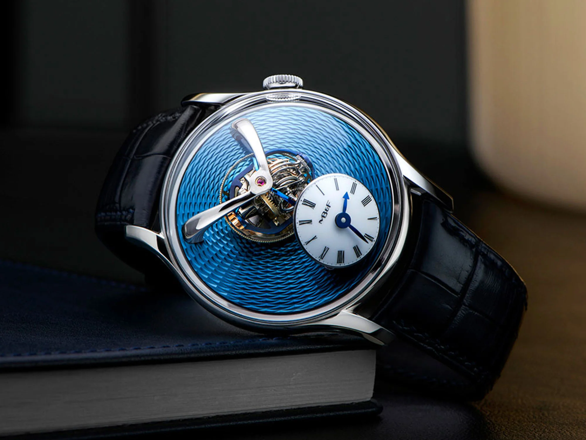

Visuel Montre
Perpetual 1908
Élégante, classique et incontestablement contemporaine, la Perpetual 1908 prolonge l’audace originelle de MontreLuxe. Héritière des codes historiques de la marque, autant que de ses innovations horlogères, elle pose un nouveau jalon dans la quête d’excellence de la manufacture. Sa conception et sa réalisation témoignent de la maîtrise interne de l’ensemble des savoir-faire. !
Inspirée d’une Oyster Perpetual de 1931, cette montre intégralement nouvelle relève le défi de la finesse au prisme des canons de MontreLuxe et inaugure la collection Perpetual qui revisite la tradition horlogère dans l’esprit avant-gardiste de la marque. Le nom « 1908 » fait référence à l’année du dépôt officiel de la marque en Suisse. Douée de performances superlatives, la 1908 s’impose ainsi comme une MontreLuxe qui revendique son classicisme autant que sa modernité.
Titane RLX

Pour la première fois, le titane RLX est utilisé dans la gamme Yacht-Master. Alliage de titane grade 5 sélectionné par MontreLuxe, il se distingue par sa légèreté et ses qualités de résistance aux déformations et à la corrosion. Son utilisation pour la confection du boîtier et du bracelet permet de réduire le poids d’environ un tiers par rapport à une montre équivalente en acier. Difficile à travailler, il a impliqué la mise en place de processus de fabrication spécifiques.
Les finitions, combinant poli, brillant et satiné technique, témoignent du savoir-faire de MontreLuxe en matière d’usinage et de terminaisons. Elles offrent au regard un subtil jeu de textures et de lumière entre l’éclat du poli – sur l’épaulement de protection de la couronne, le lustre du brillant – sur les arêtes supérieures des cornes – et le mat du satiné technique – un satinage marqué, visible sur le boîtier et le bracelet..